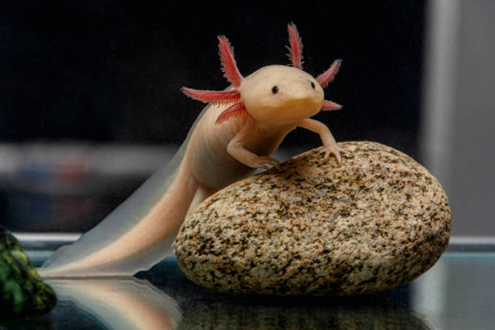

Axolotl
Axolotl is neoteny, a condition where they never grow up in the traditional sense. They retain their larval, or "tadpole-like," features and remain fully aquatic throughout their entire lives, never undergoing metamorphosis to become land-dwelling like many of their close relatives.